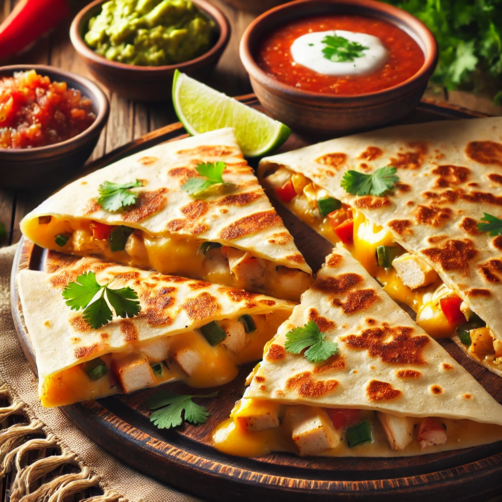

Home
Quesadilla

Quesadilla Recipe
A quesadilla is a Mexican dish made with a tortilla,
typically filled with cheese and other ingredients like meats or vegetables,
then folded and cooked until crispy and melted inside.
It's a versatile, flavorful snack or meal that's easy to customize to your taste!
ingredients
- Tortillas: (flour or corn) 2 large (each about 50-60 g, total ~120 g)
- Cheese: 50 g, shredded (cheddar, mozzarella, or a mix)
- Cooked Chicken: 60 g, shredded or diced
- Bell Peppers: 30 g, diced
- Onion: 20 g, diced
- Corn: 20 g (canned or fresh)
- Jalapeños: 10 g (about 3-4 thin slices, adjust to taste)
- Butter or Oil: 5 g (for cooking)
Step by step recipe
Prepare the Ingredient
- Shred the cheese and cooked chicken.
- Dice the bell pepper and onion.
- Slice the jalapeños thinly.
- Drain the corn if using canned.
Cook the Vegetables
- Heat 2 g of butter or oil in a skillet over medium heat.
- Add the diced onion and bell pepper. Sauté for 2-3 minutes until softened.
Assemble the Quesadilla
- Place one tortilla flat on a surface.
- Sprinkle 25 g of shredded cheese evenly over the tortilla.
- Layer with 60 g of cooked chicken, sautéed veggies, 20 g of corn, and jalapeño slices.
- Add another 25 g of cheese on top, then cover with the second tortilla.
Cook the Quesadilla
- Heat the remaining 3 g of butter or oil in a skillet over medium heat.
- Place the assembled quesadilla in the skillet and cook for 2-3 minutes on one side until golden brown.
- Flip carefully and cook the other side for 2-3 minutes, ensuring the cheese is melted and the tortillas are crispy.
Serve
- Transfer to a cutting board, slice into wedges, and serve warm with your favorite dips like salsa, guacamole, or sour cream.